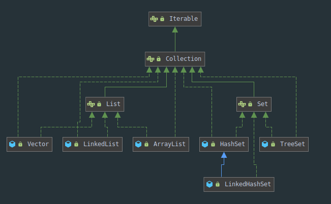
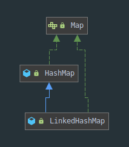

leetcode 1-20
0001.两数之和
给定一个整数数组 nums 和一个目标值 target，请你在该数组中找出和为目标值的那 两个 整数，并返回他们的数组下标。
你可以假设每种输入只会对应一个答案。但是，你不能重复利用这个数组中同样的元素。
示例:
给定 nums = [2, 7, 11, 15], target = 9
因为 nums[0] + nums[1] = 2 + 7 = 9
所以返回 [0, 1]
分析
菜是原罪， 明明有思路，但写的代码，效果就是低下。
暴力法很简单，遍历每个元素 xx，并查找是否存在一个值与target−x 相等的目标元素。
代码自然就出来了：
class Solution {
public int[] twoSum(int[] nums, int target) {
for (int i = 0; i < nums.length; i++) {
for (int j = i + 1; j < nums.length; j++) {
if (nums[j] == target - nums[i]) {
return new int[] { i, j };
}
}
}
throw new IllegalArgumentException("No two sum solution");
}
}这是最自然的想法，但时间复杂度高。这种查询是否有某个元素存在的操作，可以想到集合。
现在来复习一下List、Set、Map：
复习
集合按照其存储结构可以分为两大类,分别是单列集合 java.util.Collection和双列集合 java.util.Map


先说Collection：
- List 的特点是元素有序、元素可重复。
- ArrayList 集合就是数组——增删慢，查找快，由于日常开发中使用最多的功能为查询数据、遍历数据
- LinkedList 集合就是双向链表——增删快，查找慢
- Set 的特点是元素无序，而且不可重复。
- HashSet根据对象的哈希值来确定元素在集合中的存储位置
- LinkedHashSet是链表和哈希表组合的一个数据存储结构他是有序的
再说Map：（哈希表结构可以保证的键的唯一、不重复，需要重写键hashCode()方法、equals()方法）
- HashMap：存储数据采用的哈希表结构，元素的存取顺序不能保证一致。
- LinkedHashMap：HashMap下的子类，存储数据采用的哈希表结构+链表结构。通过链表结构可以保证元素的存取顺序一致；
还说一个Collections：
- java.utils.Collections 是集合工具类，用来对集合进行操作
接下来细细说说方法
Collection：
public boolean add(E e) ： 把给定的对象添加到当前集合中 。
public void clear() :清空集合中所有的元素。
public boolean remove(E e) : 把给定的对象在当前集合中删除。
public boolean contains(E e) : 判断当前集合中是否包含给定的对象。
public boolean isEmpty() : 判断当前集合是否为空。
public int size() : 返回集合中元素的个数。
public Object[] toArray() : 把集合中的元素，存储到数组中。
List：
public void add(int index, E element) : 将指定的元素，添加到该集合中的指定位置上。
public E get(int index) :返回集合中指定位置的元素。
public E remove(int index) : 移除列表中指定位置的元素, 返回的是被移除的元素。
public E set(int index, E element) :用指定元素替换集合中指定位置的元素,返回值的更新前的元素
LinkedList：
public void addFirst(E e) :将指定元素插入此列表的开头。
public void addLast(E e) :将指定元素添加到此列表的结尾。
public E getFirst() :返回此列表的第一个元素。
public E getLast() :返回此列表的最后一个元素。
public E removeFirst() :移除并返回此列表的第一个元素。
public E removeLast() :移除并返回此列表的最后一个元素。
public E pop() :从此列表所表示的堆栈处弹出一个元素。
public void push(E e) :将元素推入此列表所表示的堆栈。
public boolean isEmpty() ：如果列表不包含元素，则返回true。
Map：
public V put(K key, V value) : 把指定的键与指定的值添加到Map集合中。
public V remove(Object key) : 把指定的键 所对应的键值对元素 在Map集合中删除，返回被删除元素的值。
public V get(Object key) 根据指定的键，在Map集合中获取对应的值。
public Set<K> keySet() : 获取Map集合中所有的键，存储到Set集合中。
public Set<Map.Entry<K,V>> entrySet() : 获取到Map集合中所有的键值对对象的集合(Set集合)
public boolean containsKey(Object key)：如果此映射包含指定键的映射，则返回 true 。
public boolean containsValue(Object value)：如果此地图将一个或多个键映射到指定的值，则返回 true 。
Collections：
public static <T> boolean addAll(Collection<T> c, T… elements) :往集合中添加一些元素。
public static void shuffle(List<?> list) 打乱顺序 :打乱集合顺序。
public static <T> void sort(List<T> list) :将集合中元素按照默认规则排序。
public static <T> void sort(List<T> list，Comparator<? super T> ) :将集合中元素按照指定规则排
序。